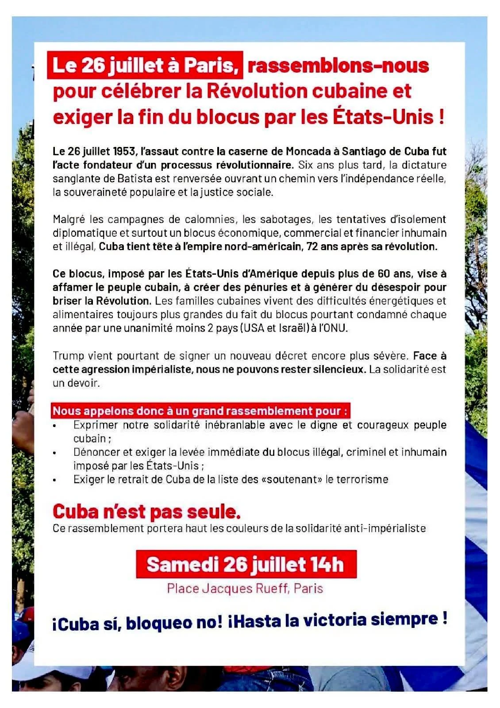

Appel archivé
À Paris, un rassemblement contre le blocus de Cuba
Date indiquée par Facebook · 24 juillet 2025
Repères éditoriaux
Nous avions relayé l’appel commun à se rassembler le samedi 26 juillet 2025 à 14 heures à Paris, en solidarité avec Cuba et contre le blocus.
Texte conservé avec la publication
Alors que les USA renforcent leur blocus criminel contre Cuba, le PCF, le MJCF, la CGT, Cuba coop, France-Cuba, Cuba Linda appellent à un rassemblement le 26 juillet à Paris.
Il faut se mobiliser et renforcer nos campagnes de solidarité avec Cuba !
Cuba n'est pas seule !

Sources
Archive rouge · export Facebook · AR-0002-FB-01057
À lire aussi · Le blocus contre Cuba : un crime monstrueux et passé sous silence depuis plus de 62 ans